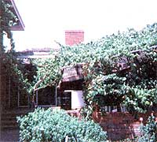
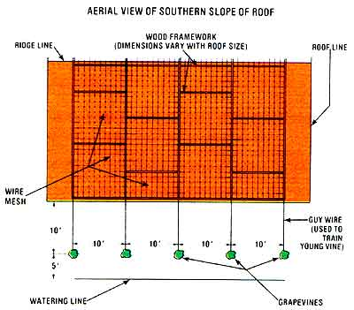

An air conditioner that yields grapes? Yep, Mary Jo Bruce describes an unusual vineyard that lowers utility bills. . . even in the midst of summer's heat!
Keeping your home comfortable in the dead of summer can be a tough job . . . and an expensive one, especially if your power source happens to be electricity. But there is a way to "keep your cool" . . . and-at the same time-declare your independence from energy-gobbling air conditioning devices. Dr. Geoffrey Stanford-of the Greenhills Experiment Station near Dallas, Texas-has developed a natural system that's capable of keeping a house as much as 20° cooler than the outside temperature . . . without wasting a single watt of valuable electricity.
INSTANT (WELL, ALMOST) SHADE
Designed primarily to help out the owners of suburban dwellings with treeless yards (which seem to pop up like mushrooms in his part of the country), Dr. Stanford's brainstorm consists of a simple rooftop covering of vines . . . which forms a living evaporative cooling layer over the house. Although such a vine canopy could start reducing your home's utility costs within one year after planting, it will likely take three full growing seasons for the creepers to cover the roof completely. (Of course, even that delay beats the ten years required for an average shade tree to grow large enough to protect your house!)
If you live in a cooler climate, a vine "roof" could make it possible for you to turnoff your air conditioning forever. . . and even if your home is in the scorching Southwest-where afternoon temperatures are likely to soar to 100°F in midsummer-the leafy network will maintain the inside air at a bearable 80°. (You could then temper your environment even further by using fans . . . and avoid having to depend on air conditioning for "survival".)
CHOOSING A VINE
To establish the cooling canopy, first find out which types of vines will grow most rapidly where you live. The majority of such systems employ hardy, broad leaved grapevines, but you might also try such perennials as Carolina jessamme, wisteria, or honeysuckle. Dr. Stanford recommends that folks living in, his region use Mustang or Baco Black No. 1 grapes. However, you should talk to your county agricultural agent before deciding which vine plant will grow best in your particular area. (Don't depend on the advice of nursery employees, since such people are sometimes eager to sell only what they're overstocked with!)
There are some plants you should specifically avoid using for home-cooling canopies in any region, advises Dr. Stanford. Among the undesirables are trumpet vine, English ivy, kudzu, and Virginia creeper . . . all vines with unruly growth that can be difficult to train in a specific direction.
FROM HUMBLE BEGINNINGS...
Set out your seedlings in a row along the southern side of your house . . . spacing them ten feet apart and ten feet out from the wall of the building. Be sure to water the shoots-using a constant drip system-at a line 18 feet from the dwelling, thus encouraging the roots to grow away from the wall. And, since you'll want your vines to develop far-reaching "anchors", it's best to water the plants so deeply that the roots won't have to come to the surface in search of moisture.
In the first year of growth, pick off all blossoms as they appear . . . then, in the late fall, cut each vine back-at the level of your house's gutter-to a single strong stem. (You'll want only one "limb" from each plant to climb onto the roof.) When the creepers reach the housetop-probably during their second year-you'll need to construct a wooden frame to support your growing plants. The vines do not actually climb right on top of the shingles . . . instead, they "float" on the frame, which is designed to stand 14 inches above the roof. You can build the wooden supports-following the pattern shown in the diagram-to fit the dimensions of your housetop . . . and then simply nail or staple a section of concrete reinforcing mesh to each frame. (If you plan to harvest rooftop grapes, be sure your frame design leaves you with a few walkways.)
Remove ail the second-year flower buds that develop, and train and tie the new growth to the rooftop mesh. (During the first two years, you can also plant fast-growing annual vines such as balsam apple, balsam pear, or luffa-among the row of grapes . . . and the quicker varieties will shade your housetop while you're waiting for the grapes to creep their way up.)
THE FRUITS OF YOUR LABOR
By the end of the third summer, the main vines should be covering the roof . . . and producing plump, juicy grapes (if you chose a fruit-bearing variety).
That's all there is to it! With a little patience and a little luck, you should-within three summers-be enjoying the benefits of your very own rooftop vine canopy . . . blessed relief from the heat, and (possibly) some tasty homegrown fruit, as well!
EDITOR'S NOTE: For another example of this method of solar cooling, turn to the article beginning on page 138 in this issue.
|
 |
 |
|